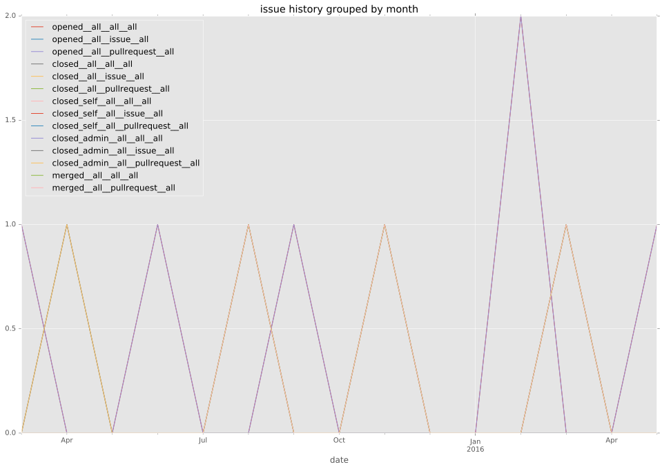
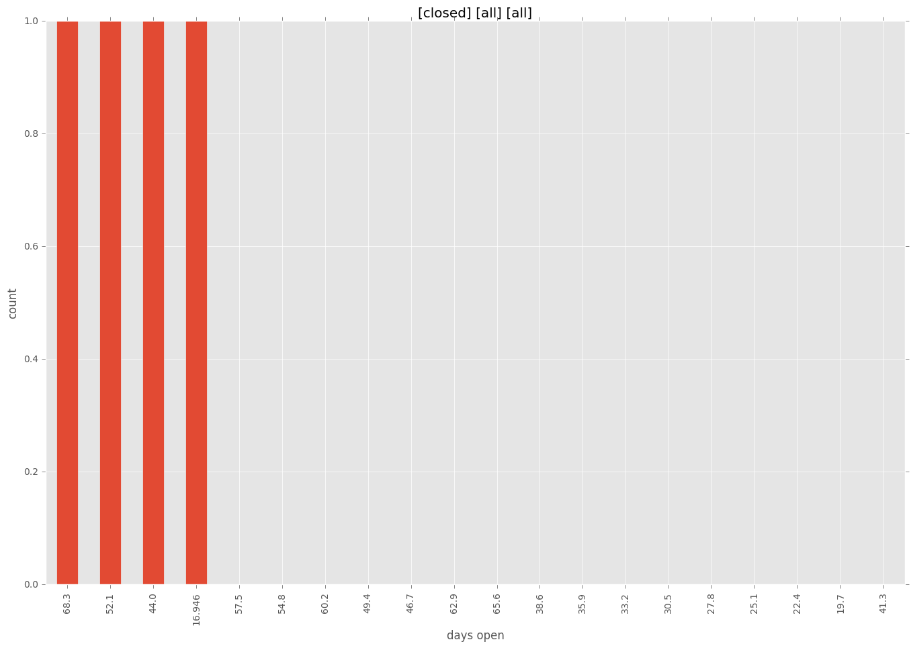
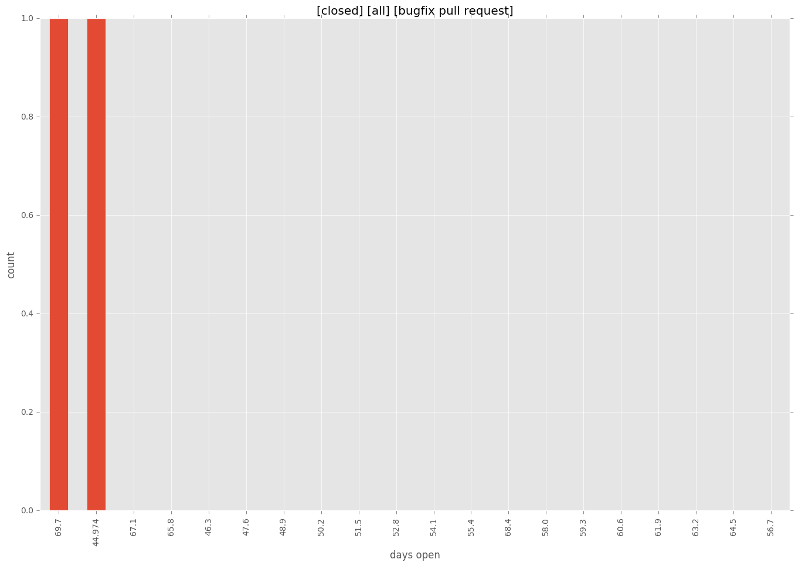
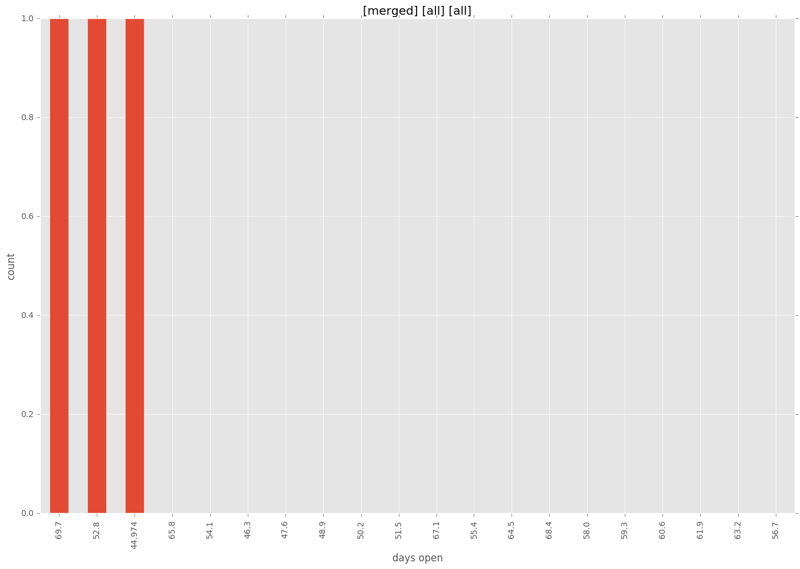
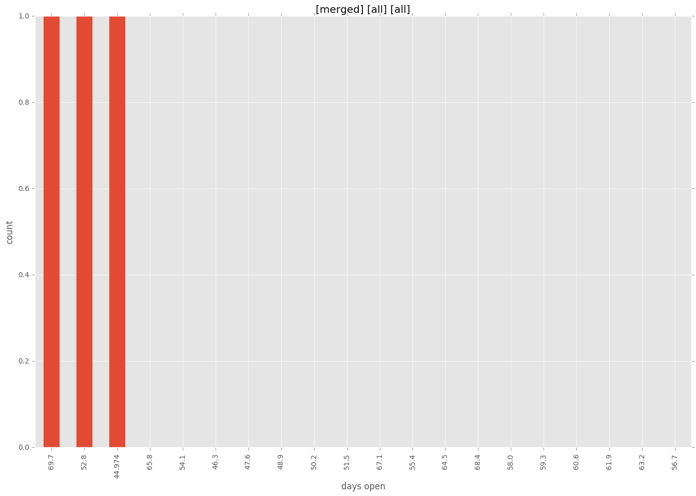

total issue counts
feature pull request: 2
bugfix pull request: 2
pullrequest: 6
new plugin: 2
issue history

days open by issue type
feature pull request
count: 0
std: nan
min: nan
max: nan
median: nan
mean: nan
bugfix pull request
count: 4
std: 15.0111069989
min: 45
max: 71
median: 58.0
mean: 58.0
all
count: 7
std: 18.4661853126
min: 17
max: 71
median: 54.0
mean: 51.0
pullrequest
count: 0
std: nan
min: nan
max: nan
median: nan
mean: nan
new plugin
count: 3
std: 21.36195996
min: 17
max: 54
median: 54.0
mean: 41.6666666667
closures grouped by total days open




 
